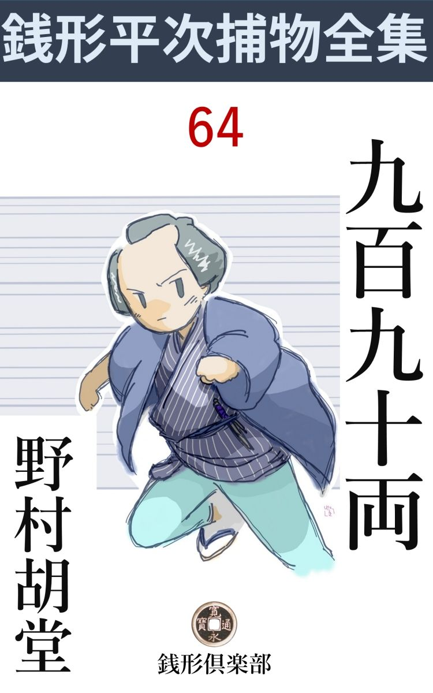
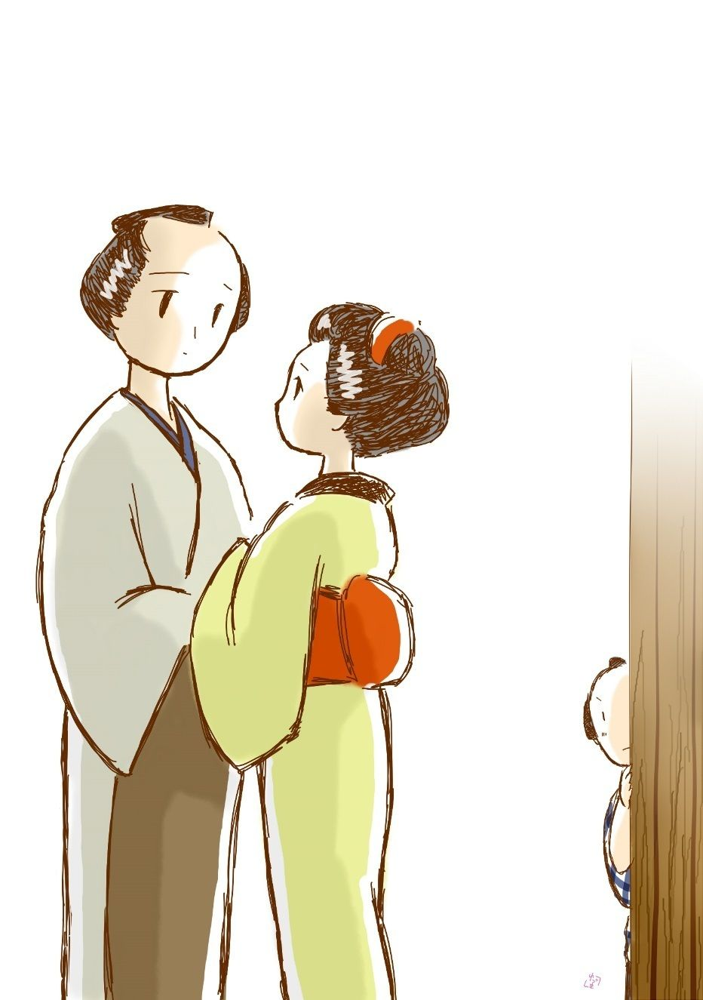

| 九百九十両: 銭形平次捕物全集第64話 (銭形倶楽部) | |
| 野村胡堂 | |
| ZENIGATA CLUB (2018) | |

一
「親分」
「何だ、八」
「腕 が鳴るね」
ガラッ八の八五郎は、小鼻をふくらませて、親分の銭形平次を仰 ぎました。
初夏の陽を除 け除け、とぐろを巻いた縁側から、これも所在なく吐 月 峯 ばかり叩いている平次に、一とかど言い当てたつもりで声を掛けたのでした。
「腕の鳴る面 かよ、馬鹿野郎。近ごろお湿 りがないから、喉 が鳴るんだろう」
「違げえねえ」
平掌 で額をピシャリ。この二三日スランプに陥 っている平次から、この痛快な馬鹿野郎を喰わせられるのが、ガラッ八にはたまらない嬉しさの様子です。
「八、あれを聞くがいい」
「何ですえ、親分」
「誰か来たようだ、飛んだ面白い仕事かも知れないよ」
「------」
「家の前を往ったり来たりしているだろう。入ろうか入るまいか、先刻から迷っている様子だ、------女の跫音 だね」
平次の言葉が終らぬうちに格子が開いて、お静が取次に出た様子、若い女の低いが弾 み切った声が聞えます。やがて通されたのは、二 十 歳 そこそこの愛くるしい娘、何やら悩みに打ちひしがれて、部屋の隅に小さく俯 向 きました。
色白の頬が少し痙攣 して、豊かな肩が揺れると、恐る恐る顔をあげて、相対した江戸一番の御用聞------銭形平次の顔をソッと見上げるのです。
「俺は平次だが、どんな用事で来なすった。思い切って打ち明けてみるがいい」
平次はこの娘の裡 から善良なものを感じました。
「親分さん、父 さんを助けて下さい。父さんは頸を縊 って死ぬんだといって、どうなだめても聞いてくれません」
「成程、それは大変だろう、------お前の父さんというのは何だえ、稼業 は？」
平次は娘の昂奮 を外らさないように、心持ちせき込んで訊ねます。
「灸点 横町（神田佐久間町）の多の市でございます」
「あ、蛸 市 か。すると姐さんはお浜さんかい、道理で------」
縁側からガラッ八が長い顎 を出します。
「黙って引込んでいろ、馬鹿野郎ッ」
平次の一喝 を喰 って、ガラッ八は頭を叩かれた蝸牛 のように引込みました。
もっとも、娘の名乗るのを聞いて、ガラッ八が乗り出したのも無理のないことだったのです。灸点 横町の多の市というのはお灸 と鍼 の名人で、神田中に響いた盲人ですが、稼業の傍 ら高利の金を廻し、吸い付いたら離れないからというので、蛸市と綽 名 を取っているほど、強 か者だったのです。
その娘のお浜の美しい話も、ガラッ八は聞き飽きるほど聞かされておりました。ポチャポチャして可愛らしくて、若い男の心をひしと掴 まずには措 かない------という噂のお浜が、この物に怯 えて雁 皮 紙 のように顫えている娘とは思いもよりません。
「そう仰しゃるのも無理はございません。父さんは本当にお金を溜 めるのに夢中だったんですから、------その命がけで溜めたお金が九百九十両、誰かに盗まれてしまいました」
「九百九十両？」
銭形平次は驚きました。九百九十両といえば、千両にたった十両欠 けただけ、聞いただけで一寸ドキリとさせる大金です。
千両分限という言葉が、今の千万長者と同じ響 を持った時代、------十両から上の泥棒は首を斬られた時代------に、灸点 横町の裏長屋で、九百九十両溜める人間も溜める人間なら、それを盗む奴も盗む奴------と思ったのでした。
「父 さんは------あの金を盗られては、生きている張合もないから、助けると思って殺してくれと、泣いたり暴 れたり」
お浜の眼 ------訴 えるように平次を仰ぐ黒い眼は、夕立を浴びたようにサッと濡れて、ハラハラと拭 いもあえぬ涙が膝にこぼれました。
「順序を立てて詳 しく話すがいい、随分力になってやらないものでもない」
平次は膝を進めました。
「お父さんはこの二十年の間、蛸 市 とか赤鬼とか、世間様から存分なことをいわれながら、一心不乱にお金を溜めました。随分痛々しい取立てもしたそうですが、その代り私達父娘 の身も詰められるだけは詰めたのです。爪 に火 を灯 すと言いましょうか、三度の物も二度にして、十年越し、浴衣 一枚買ったこともございません」
お浜 は一生懸命さの中にも顔を赧 らめました。着ている浴衣は、別れた母親譲 りの品らしく、二三十年前江戸で流 行 った、洗い晒 しの大時代物、赤い帯も芯 がはみ出して、繕 ろい切れぬ浅ましい品だったのです。
「そんなに金を溜めて、何をするつもりだったんだろう」
平次のような、宵越の銭さえ持たない者には、烏金 まで貸して溜める人間の心理が解りません。
「盲目の望みは検校 でございます。眼が見えないばかりに、艱難辛苦して育った父さんは、人様に馬鹿にされる口 惜 しさが昂 じて、一生のうちには、石に嚙 り付いても検校の位に上り、今まで片輪者を馬鹿にした人達を、眼下に見てやろうと思い立ったのです」
「成程ね」
「そのために配偶 の私の母とも別れ、娘の私だけ引取って、母がその日の暮しにも困っているのを知りながら、十年越し仕送りもしませんでした」
「------」
「二十年間、夢にも現 にも、口癖 にいったのは、------俺はきっと検校になる、どんな事をしても検校になる------と」
盲人の恐ろしい執念 は、お浜の口を通して、平次の身にも迫 ります。
「検校の位になるには、千両要るということだが、お前の父さんはその用意の金を盗られたのかい。なるほど半狂乱になるのも無理のないことだ」
平次も次第に多の市父娘の苦悩が解って来ました。
二
盲人の保護は中古以来のことですが、徳川時代になってその制度を確立し、上は検校 総録 から最下位の半 打 掛 座 頭 に至るまで、階級を七十三の小 刻 みに分けました。
この盲官のことは、くわしく書くと際限もありませんが、この物語に必要な程度だけ、ほんの概略 を抄 くと、------盲人の官途は四階十六官、七十三刻 と定められております。四階とは検校、別当、勾 当 、座頭、十六官とは座頭に四度の階級があり、勾当、別当、検校それぞれ次第があって、都合十六に分れていることを言い、七十三刻とは、半打掛から中老引 まで六十七刻、正検校から五刻六老を経て、職総検校まで都合七十三の階級のあることを言うのです。
これらはすべて盲人保護の官位で、昔は人物技芸 一世に秀 でた者を任じたのですが、後、足利 時代から売官の風が行われ、江戸時代には売官料まで公定されて、一階一両から四十五両に及び、七十三刻を併 せると都合七百十九両、------つまり座頭の最下位から、最高位の惣 晴 まで進むには、七百十九両の金を必要としたことになったのです。
更に時代が下 ると、七百十九両さえ納めれば、一介の土 盲 が、一夜にして検校にもなれたというのですから、野心的な盲人達が、金を作って検校の位を獲 ようとしたのも無理はありません。検校になると、世の尊崇 を集めるばかりでなく、官物官金の配当、名目金貸付の収益など、夥 しい役得が付 随 したのでした。
「京都に上って、久 我 家 へお願いする日を指折り数えて、父 さんは一生懸命金を溜めました。今に見ろ、蛸 市 とか何とかいいやがって、この俺を虫ケラのように思った長屋の奴等や、俺に足腰を揉ませて大きな面をした町内の旦那衆を見返してやるから、------というのが口癖で、好きなものも食わず、温かいものも着ず、千両になるのを楽しみに働いて働いて働き抜いたのです」
お浜は浅ましいことのように語りつづけました。平次の無言の奨励 がなかったら、こうまで親の耻 を打ち明ける勇気もなかったでしょう。
「七百十九両で沢山な筈だが------」
「検校になるのは、七百十九両で済みますが、京都へ上る路用から、検校になった時、見苦しくない身 装 や住居も要ります。父さんはそんなこんなで、千両溜めたら京都へ上るつもりで、そればかり楽しみにしておりましたが、千両へあと十両という時、魔がさしたのでしょう」
お浜の言葉も昂奮が去るにつれて、次第に淋しく滅入 ります。
「それを盗られたのだね、どこへ隠して置いたんだ」
平次は話の無駄を苅 り取るように、こう言葉を挾 みました。
「太 い竹筒 へ入れて、父さんの寝る三畳の置床の隅に掛けて置きました」
「不用心なことだな」
「竹筒は置 床 の柱のように見えました。誰もあんなものに千両近い小判が入っているとは思いも寄りません」
「成程そういったものかも知れない。で、無くなったのは何時だ」
「三日前の晩でございました」
「------」
「明日は、貸した金が十両入るから、いよいよ千両の願いが叶 った------と、父さんは珍しくお酒を呑んで、上機嫌で寝ましたが、その晩」
「待ってくれ、泥棒は確 かにその晩入ったに相違あるまいな」
「寝る時まで、間違いもなく竹筒はあったんですから」
「それからどうした、順序 を立てて話してくれ」
平次は静かに煙管を取上げました。
「酔った勢いで、竹筒の柱を撫でて、上機嫌で休みましたが、翌る朝になると、雨戸は開いて、置床の前の竹筒はなくなっていたのです」
「雨戸は締 りがなかったのか」
「そんなものはございません。盲目 の家へ入る泥棒もあるまいから------と、父 さんは締りもろくにさせなかったのです」
「フーム」
「竹筒がなくなったと判ると、父さんは死ぬほどびっくりしましたが、お上へ届けて、そんな大金を持っていたと知れるのが嫌だし、盗られた金が滅多に出たためしもないからと、私と二人で家の中を捜 しました」
「お届けをしないというのは乱暴だな」
平次はそう言いましたが、その頃の岡っ引警察制度の欠 陥 を一盲人に指 摘 されたような気がして、何んとはなしに小 鬢 を掻きます。
「何処を捜す当もありません。半日考えた揚句 、隣町の道 尊 坊 に頼みました」
「何だ、あの似非 修験者 か」
「でも他に頼る人もありません。------道尊さんは早速やって来て、護 摩 を焚 いて祈ってくれましたが、何のしるし もありません」
「大金が無くなったと聞いて近所の衆も祟 りを恐れて寄り付かず、仕方がありませんから、暴れ狂う父さんを、仲の好い佐の市さんとお祈りに来た道尊さんにお願いして私はちょっと抜け出して来ました」
お浜は語り終って吐息 を吐 きました。何か娘心では背負い切れない、大きな恥の塊 をおろして、ホッとしたような心持でしょう。
「そいつは気の毒だ。命がけで溜めた千両を盗られちゃ、死にたくもなるだろう。見つかるか見つからないか解らないが、とにかく行って見るとしようか」
平次は気さくに言って、煙草入れを腰に------立上がったのでした。
三
銭形平次と八五郎は、お浜に案内させて、すぐ佐久間町の灸点 横町へ駆け付けました。
「さあ、殺せ------殺してくれ、お願いだから殺してくれ」
危ないドブ板を踏 むと、奥からは押潰 されたような声。平次は、さすがにギョッとして立止ります。
「八、------お浜はどうした」
平次はフト、一緒に来たお浜の姿の見えなくなったのに気が付きました。
「へッ、へッ、へッ」
「何を笑やがる」
「路地の外を覗いて下さいよ、親分」
八五郎の指す方を、二三歩戻って覗くと、お浜は二十二三の若い男の胸に顔を埋めるように、何やら熱心に話しているではありませんか。
「ありゃ何だ」
「経師屋 の吉三郎------てんで、飛んだ二枚目さ、へッへッへッ」
「やッかむな、八」
「妬 くわけじゃねえが、少しは気になりますよ、親分」

「お浜に男があるとは気がつかなかった。構うことはねえ、一と当り当って見るがいい」
「縄を掛けるんですか、親分」
「あわてちゃいけねえ、この家と掛り合いの人間で、最初に逢った男だ。訊いたら何とか言うだろう、懐 の十手を引っ込めて、惚気 でもいわせて見るがいい」
「へエ------」
八と別れて、平次は多の市の家へ入って行きました。
「お願いだ、殺してくれ。俺はもう生きる精 も張合も抜けた------二十年この方、女房まで追い出して、食うや食わずで溜 めた金だ。せめて盗んだ野郎へ面 当 てに、頸でも縊 って死んでやってよ、化けて出て怨 が言いてえ」
怨に燃えるような声は、ツイ鼻の先の破れ障子の中から、護 摩 を焚 く凄 まじい煙と共に湧き起るのでした。
「まア、そんなに気を立てずに、道尊さんの調伏 を待ってるがいい、そのうちに盗った野郎は、血へどを吐いて死ぬかも知れねえ」
そう言うのは主人 多の市の仲好し、佐の市という盲人でしょう。
「御免よ」
平次はガラリと障子を開けました。
「誰だい？ 取込みがあるんだ。揉 療治 なら後にして貰いてえが------」
佐の市が見えぬ眼を剝きます。
「俺は平次だが、何か間違げえがあったそうじゃないか」
「あッ、銭形の親分さん」
取乱した多の市が、平次の声を聞くと這出しました。
中はたった二た間、想像以上の凄まじい住居で、ここに千両近い金などがあろうとは、どう間違っても考えられません。骨ばかりの障子、芯 のはみ出した畳、壁は落ち、戸はささくれて、家具らしいものは、七輪が一つに鍋が二つ、茶碗やら丼 やらが、棚の上に四つ五つ並んで、柱には着換えの襤 褸 が一二枚ブラ下がっているだけ、さすがの平次も、しばらくは言葉もありません。
「銭形の親分さん、九百九十両盗った野郎を捜し出して、磔 刑 にするなり、八つ裂 にするなり、思い知らせてやって下さい、お願い」
上框 に腰をおろした平次の袂へ、多の市の痩せさらばえた手が、ワナワナと蔓 草 のように絡 み付くのです。
「まア、待ちな、一と通り見て来るから」
平次は言い捨てて、家の内外を一と廻り、あまりの無造作な住居で、手掛りも何にもありません。
多の市の寝ているのは奥の三畳、お浜の寝ていたのは入口に近い四畳半、その外には狭い濡 縁 があって、二つの部屋の隣りに小さいお勝手があります。
「ここに千両近い金のあるのを知っているのは誰と誰だえ」
元の座へ帰って来た平次の問いは常識的でした。
「娘の外にはありません」
「お前が金を持っていることは、この平次も薄々聞いているぜ、------お浜の外にも嗅ぎ付けた人間があるだろう」
「世間ではそんな噂をしておりますが、九百九十両と纏 まった金を竹筒の柱に入れて持っていると知っているのは、娘たった一人でございます」
「大金を持っていることを知っている者なら他にもあるだろう」
「それはもう、------現にここにいる佐の市さんだって、私が検校になりたさに、金を溜めていることは知っている筈です」
「それは、多の市さん」
佐の市は驚いて口を出しました。主人 と同年輩の四十五六、同じ稼業 には相違ありませんが、これは人に金を貸す方ではなく、始終借りている方で、酒も呑み、遊びも好き、身 装 も相当で、内々は富 籤 までも買っているといった山気のある按 摩 でした。
「それから」
平次はそれに構わず問い進みました。
「十年前に別れて、今でもときどき無心に来る女房のお皆も薄々は知っております。それに隣のお角さんだって、小判の音位は聞いているでしょう、それから------」
「------」
多の市は一寸考えましたが、
「娘にちょっかい を出している経師屋 の吉三郎の野郎だって娘から聞いていないとは言われません」
「それっ切りか」
「へエ------」
多の市は覚束 なくも言い切ります。その間にも、修験者の道尊坊は、護摩の煙を濛々 となびかせながら、揉 みに揉んで何やら祈り続けているのでした。虎 髯 の四十男で、あまり知恵のありそうな人間ではありませんが、様子と声の物々しさに、妙に狂信者の心を囚 えそうなところがあります。
「この家を明けるような事はあるまいな」
「それはありません。何と言っても、千両近い金があるんですから、私が仕事に出る時は、必ず娘に留守番をさせました」
「お前が一番怪しいと思うのは誰だい」
「へエ------」
「遠慮なくいうがいい」
「壁へ穴をあけて、朝夕覗 いている人間が一番気になりますよ、親分さん」
「------」
平次はそう言われて二軒長屋の境 の壁を見ました。成程多の市の部屋の柱寄り、ちょうど畳から五六寸上が、向うから壊 されたように、ポコリと土が落ちているのです。
「その小判を入れた竹筒の長さはどれほどあったんだ」
「置床の端っこの臍 へ立てて、上の梁 へはめ込んだんですから、七尺はありましたよ」
「目方は？」
「五貫目もあるでしょう」
それでは女子供には相当の荷物です。
四
平次はその足で直ぐ壁隣りの相長屋、後家 の内職で細々と暮しているお角という大年増の家を覗きました。
「親分さん、銭形の親分さんでしょう。よく存じていますよ、隣の蛸 市 が、私がいちばん怪しいって言ったでしょう、五貫目もある小判入りの柱が私に持てるか持てないか、考えても見て下さいよ、ね、親分さん」
顔を見ると、もう立て続けにまくし立てます。三十七八の青白い女、どこか病気でもある様子ですが、昔は相当に踏 めたらしい眼鼻立ちで、さわやかに動く舌の根はどうも素 人 育 ちではありません。
「竹筒を引摺 る術 もあるぜ、お神さん」
「まア、親分さん、お口の悪い、蟻 が蚯蚓 を運ぶんじゃあるまいし」
「ちょいとここを借りるよ」
「さアさアどうぞ」
怪しげな座蒲団を敷いたのは、多の市とは反対側になっている濡 縁 です。
「ところで、何も彼も知っているようだから、つまらない事は抜きにして訊くが、お神さんに心当りはなかったのかい」
女世帯らしく小綺麗に片付いた家の中を見廻すともなく、平次はこう訊きました。
「お生憎様、何にも知りませんよ------でもね、親分さん。あの佐の市というのは、お隣りの蛸 市 の朋 輩 のくせに、打って変った道楽者で、蛸市にはうんと借金があるようだし、それに蛸市が検校 になるのを、いちばん嫌う人間ですよ」
「成程ね」
「その上、滅法 カンのよい盲目 で、賭 け碁 までやるという位だから、眼が見えなくたって、戸 閉 りのない朋輩のうちへ、泥棒位には入りかねませんよ」
「それは知らなかった。有難うよ、お礼をするぜ、お神さん」
「まア、親分さんはお世辞ものね」
「ところで、その壁の穴から、あの隣の置床のあたりは見えないだろうか」
「まア」
「ちょいと覗かして貰うぜ」
「悪戯 をしたのは鼠ですよ、親分さん。近頃の鼠はそりゃタチが悪いから、壁でも板戸でもすぐ喰い破りますよ」
「そうだろうとも、よい年増が、こんな穴を拵 えて隣を覗くわけはねえ」
「まア、親分さん」
お角の抗議を空耳 に聞いて、平次は狭 い濡縁から三畳の間に乗出すように、穴から隣の家の方を覗いております。
五
「ちょいと待った」
「あ、銭形の親分さん」
吉三郎はギョッと立止まりました。お浜や八五郎に別れて、柳原 河岸 の宵 明 りを、自分の家の方へ急いでいたのです。
「少し聞きたいことがあるんだ」
「私は何にも知りませんが、親分さん」
吉三郎はお浜から事件の概略 を聞いたらしく、平次の前に立 竦 んだ顔は、不安に顫えておりました。
「お前を九百九十両の盗人 だと思ってるわけじゃねえ。実は先廻りして、あの晩お前が家から一と足も出ない事を聞いて来たんだ」
「へエ------」
平次の行届いた言葉に、吉三郎は安心よりも驚きが先でした。
「だから、知ってるだけの事を、みんな話してくれさえすればいい、------お前はお浜といつ頃からの仲なんだ」
「三年になりますよ、親分さん」
吉三郎の声は悲しそうです。二十二三の少し柔和 だが良い男、お浜が夢中になるのも無理はない------と、平次は見ております。
「親父の多の市が不承知なんだろう。どうしてもいっしょにしねえというのか」
「へエ------検校になった暁 、経師屋の下職じゃ婿 にならねえ------と」
「泣くな、大の男が見っともねえ」
「どう頼んでも多の市さんは聞いてくれません。心中をしようか、夜逃げをしようか、と何べんも切り出しましたが、お浜はどうしても承知してくれません、------因 業 なようでも父親に違いないし、眼の不自由な者をたった一人捨てて、死にも逃げもならない------とこう言います」
「いい心掛けだな」
「私にはそのいい心掛けが嬉しくありません。三年越しの深い仲、こんな苦労をした揚 句 、大地へ額 を摺 り付けて頼んでも、添わせてくれない親が、そんなに大事なものでしょうか、親分さん」
「------」
「若 し検校 などになる望 がなかったら、------あの千両近い金がなかったら、多の市さんも堅気の職人に娘をくれる気になったでしょう。私はお浜さんからその話を聞いて、本当に------いい気味だと」
「吉三、少したしなむがいい。それでなくてさえ、お前は疑われているんだよ」
「へエ------」
こんな純な若者を、平次もこの上追及 する気にはなりませんでした。
「まア帰ってよく気を落着けるがいい。つまらねえ気を起してお浜を困らせるんじゃないぞ」
「へエ------」
何という間の悪さ、気のきかない叔父さんのような事をいって、平次はぼんやり家へ帰りました。
「親分」
先廻りして待っていたのは、ガラッ八の八五郎です。
「何だ、八」
「九百九十両の盗人 の当りはつきましたか」
「それがつかねえ」
「あんな馬鹿気た事は、半刻 で判りそうじゃありませんか」
「それが半日かかって眼鼻もつかねえ、------どうだ、八、聴いてくれるか」
「へエ------」
「今日一日で捜 ったことを纏 めて話すうちに、何んかよい知恵が浮ぶかも知れねえ。鼻を掘らずに、神妙に聴くんだよ」
「へエ------」
八五郎はあわてて長い顎 を撫でまわします。
「お浜は親孝行だ、あの娘が父親の金を盗る筈はねえ」
「へエ------」
「だが、あんな狭い家で、締りがなかったにしても、酔っ払っている多の市はともかく、若い娘のお浜が、自分の枕から一間とも離れねえ置床の柱を外 して持って行くのを、知らずにいるはずはねえと思うがどうだ。あの竹筒を外すと、置床の臍 がきしむのは、木口の光る様子で見ても解るぜ」
「------」
「すると、お浜は泥棒を見ているはずだ。見ていても言えなかった------と考えたらどうだ」
「へエ------」
「お浜がそれほど庇 ってやる人間は、吉三郎の外にはねえが、吉三郎はあの晩一と足も外へ出なかった。------それに、盗むのを見たら、大きな声を出さず、一度は泥棒を庇い立てしたお浜が、三日目に俺のところへ飛込んで、泥棒をつかまえてくれと泣きついたのはどういうわけだ」
「フーム」
ガラッ八の鼻の穴の大きいこと。
「すると、最初お浜が自分の知っている者の仕業 と思い込んだのが間違いで、後で赤の他人の仕業と判ったのかも知れないな」
「------」
「置床の柱に小判が入っていると知ってるのは、お浜と吉三郎の外に、隣の後 家 のお角がある。あの壁の穴から、多の市の部屋は見通しだ。が、お角は華 奢 で病身らしいから、とても五貫目もある小判の柱を盗める筈はない」
「お角が人に頼んで盗ませたら、親分？」
「それも考えた、が、あの女は人に物を頼める女じゃない、疑い深くて、勝手で」
「お角に男がありゃしませんか」
「不思議にない様子だ、それがあの女の病気だ」
ここまで来ると、平次もハタと行詰 ります。
六
それから三日目、すっかり腐 ってしまった平次。半 気違 の多の市に悩まされて帰ると、
「親分、大変ッ」
ガラッ八が眼の色を変えて飛んで来ました。
「何だ、八」
「足がつきましたよ、親分」
「何の足だ」
「九百九十両の片 らを使った人間があるんで」
「何だと？」
「あの長屋に、小判で買物をした奴があったらどうします」
「えッ」
「お角の阿魔 ですよ。昨日越後屋 へ行って単衣 と帯を買って小判を出しましたよ」
「よし、行って見ろ」
二人は宙 を飛びました。灸点 横町へ来て、お角の家の格子を引開けると、
「御免よ」
飛込むのといっしょでした。
「まア、親分さん」
「お角、小判をどこから出した。隠しちゃためにならねえよ」
いつにもなく平次もせき込んでおります。
「まア、いきなり飛込んで来て、------そんな事が訊きたいと仰しゃるの、親分さん。こ、こ、こ、小判は天下の通用金ですもの、どこにでもあるじゃありませんか」
お角は事もなげに笑いますが、平次の気組を受けかねて、さすがに青くなっております。
「そんな言いわけを聞くんじゃない。小判をどこから出した、それを言って貰おうか」
「臍 くりですよ、親分さん」
「えッ、しぶとい女だ。十両の上は盗みも打 首 獄 門 だ。黙って縄を打って引立てると、無事では済むまいぞ」
「------」
いつにもない平次の激 しさ、お角も度膽 を抜かれて口を噤 みます。
「お前が五貫目もある竹筒を担ぎ出したのでないことは、この平次がよく分っているが、お白 洲 の砂 利 の上ではそんな弁 解 は通らねえぞ。さアお角、小判をどこから出した。ここでいうか、それとも」
「いいますよ、親分、いいます」
「どこで、誰から貰った」
「貰ったんじゃない、拾ったんです」
「何？」
「あの日の朝、お隣の前のドブ板の隙間 から拾いましたよ」
「何枚あった」
「小判が三枚」
「本当だな」
「嘘 なんか言うもんですか、親分さん」
「何だってまたすぐ使ったんだ」
「貧乏人が小判を持っちゃ使わずにいられませんよ。たった四五日懐の中へ入れて置いただけで、持病の癪 を起しそうになったじゃありませんか」
「ともかく、あとでお呼出しがあるかも知れない。当分どこへも出ちゃならねえよ」
「へエ」
「小判の残りは町役人に預ける、何枚ある」
「二枚と一朱残しましたよ」
「呆 れた女だ」
平次とガラッ八は、その金を町役人に引渡して、ぷんぷんして引揚げます。
が、事件はその晩のうちに、思わぬ方へ発展してしまったのです。
翌る日の朝。
「親分」
「また大変の売物か、八。今度は何だ？」
飛込んで来た八五郎の顔には、全く大変という字が草書で書きなぐってあるように見えたのです。
「お角が殺されましたよ」
「何？ お角が、そいつあ大変だッ」
飛んで行った時は、町役人と弥次馬が来て、朝の路地が押すな押すなの騒ぎ。
「退 いた退いた、見世物じゃねえぞ」
掻きわけて入って見ると、お角は浅ましくも床の中に絞 り殺されて、無気味な白い眼に、怨 多い壁の穴を睨んでいるのでした。
頸 へ巻きつけたのは、お角の細 紐 、四方 を見ると大して取乱した様子もなく、ほんの一と思いに殺 られたことは解りますが、余っ程慣 れた奴と見えて、後に毛程の証拠も残しません。
隣の多の市の家で訊きましたが、多の市は金を盗まれてから半気違い同様。お浜も悲 歎 にくれてばかりいて何にも知らず、その上修験者道 尊 坊 が来て、夜中まで熱禱を続けていたので、隣りの物音も聞かなかったと言うのです。
「お角が、盗人 を知っていたでしょうか、親分」
ガラッ八は囁やきます。
「盗人じゃあるまい、多分、小判を隠した場所を嗅 ぎ付けたんだろう」
「------」
「昨日 三枚の小判を隣りのドブ板の隙間から拾ったと言ったが、隣りのドブ板にはそんな隙間はないし、あったところで、三両の小判が気を揃えて隙間へもぐり込むわけはねえ、それに、------お角は商売人上がりで大寝坊だ。ドブ板や往来に、夜のうちに落した小判が、お角が起き出す迄無事でいるわけはねえ」
「盗人 を嗅ぎ出して強請 ったんじゃありませんか。それ位のことはやりかねない女だ」
「盗人は容易ならぬ人間だ。それを強請 るにしちゃお角の様子は暢気 過ぎた。俺は盗人の隠した金を探し当てたんだと思うよ」
「成程ね」
が併 し、平次の知恵もこれ以上には遡 りません。
「隣りへ行って、もういちど様子を見ようじゃありませんか」
「よかろう」
二人はもう一度、多の市の家へやって行きました。が、そこの陰惨な空気は、暢気者のガラッ八をも窒 息 させそうです。多の市はたった四五日の間に、すっかり窶 れ果てて、冥土 から来た幽 鬼 のように、物をも食わずにうめき続け、お浜はすっかり怯 え切って、部屋の隅に踞 まったまま、涙も涸 れそうに泣いているのです。
「八、こいつは唯事じゃないぜ」
「へエ------」
「お浜は盗人も、人殺しも知っているんじゃないか、お浜があんなに心配するのは誰の身上だと思う」
平次は路地を出るとこう言います。
「吉三郎じゃありませんか」
「俺もそれを考えていたよ、行ってみよう」
二人はツイ一と走り、吉三郎の家まで飛んで行きました。店の奉公人と近所の人達に念入りに訊くと昨夜 も吉三郎は一足も外へ出なかったことは、同じ部屋で寝ている三人の奉公人達が口を揃えて証明しております。
「親分、変じゃありませんか」
「変だが、仕方がない、------ところで八、俺はすっかり忘れていたが、お浜には母親があった筈だが、知っているか」
「へエ、十年前に亭主の多の市と別れて隣町で細々と仕立 物 をしながら暮していますよ」
「行って見よう、八」
「無駄ですぜ、親分。十年も前に多の市と別れているし、お皆といって、貧乏はしているが、町内では評判の気のいい女ですよ」
「評判なんかどうでも、------お浜があんなに庇 っているのは外にない筈だ」
「でも、お浜は、小判の竹筒 が盗まれて、三日目には親分のところへ飛込んで来たじゃありませんか、自分のお袋の仕 業 と知ったら、あんな事をする筈はありません」
文句をいう八五郎を後ろに、平次は、お皆------多の市の元の女房の家へ駆けつけます。
七
「親分さん、お浜がそんなに泣いているなら、みんな申上げてしまいます。小判を隠した竹 筒 は、この私が盗ったに相違ございません」
四十女の貧し気なお皆 は、平次に問い詰められるまでもなく、泣きながらこうスラスラといってのけるのでした。
「その小判をどうした、どこに隠してある」
後ろから八の差出口です。
「それが一向判りません、あの家から盗み出したのはこの私ですが、それをまた人に盗られてしまいました」
こういうお皆は、この上もなく質素な調度の中に暮しておりますが、何となく確 り者らしい中年女でした。
「それはどう言うわけだ」
平次も思わずせき込みます。
「詳 しく申上げましょう。お聞き下さい、親分さん」
お皆の言うのはこうです。夫の多の市が検校になりたさの野心に燃えて、非道な高 利 貸 を始め、生活を極度に切り詰めて、手 強 く意見をするお皆を裸にして放り出したのは今から十年前、お皆は人知れず娘のお浜と往 来 して、夫の心の解けるのを待ちましたが、多の市の非道と吝嗇 は年と共に募 るばかり、とうとう吉三郎とお浜の仲まで割いて、千両の金が纏 ったのを機会に、いよいよこの月のうちには、京都へ上ることに決めてしまったのでした。
お皆は矢 も楯 もたまらぬ心持でした。お浜可愛さとそれを慕 い寄る吉三郎のいじらしさ。その上自分が、十年の恐ろしい艱苦に晒 されたのも、多の市が柄にもない検校になる野心のためと思うと、腹の底から忿怒が煮えくり返ります。とうとう夫の家へ忍び込んで、たった一日で千両の金を隠し、浅ましい夫に、思い知らせてやる気になったのです。
多の市が珍らしくお祝の酒を買わせたと聞いた晩、お皆はとうとうこの企 の実行に取りかかりました。お浜は其処で気が付きましたが、母の仕業と知って、素知らぬ振りで狸寝入りをしていたのです。
母が盗った小判の筒は、縁の下の柔 かい土に半分埋めてあったのを、お浜は翌る朝になると見て取ってしまいました。父の半狂乱に気を揉みながらも、母の目論見の底を割りかねて、黙ってしばらく様子を見ているうちに、多の市は似 非 修験者の道尊坊を頼んで来て、大 袈 裟 な祈 禱 を始めました。
お浜はその間にちょっと抜け出して、隣町の母親を訪ね、その気持を確 めると、帰って縁の下から、小判の竹筒を取出し、改めて父親に意見をするつもりでしたが、帰った時は、もう誰かに取出されて、縁の下の竹筒は影も形もなかったのです。
「いずれ近所の衆か、物売りなどが見つけて縁の下から持って行ったのでしょう。娘はあまりのことに仰天して、翌る日銭形の親分さんのところへお願いに行ったそうでございます」
お皆 は静かに顔を挙げました。お浜に似て昔は美しかったでしょう、貧に窶 れ果ててはおりますが、何の邪 念 があろうとも思われません。話の筋道も、まことによく通ります。
「すると、お角を殺したのは？」
ガラッ八はまた口を出しました。
「縁の下から竹筒を盗んだ曲者だ」
平次は静かに、組んだ腕をほどきます。ここまで来ると、平次の心に事件の全貌がはっきり投影した様子です。
八
「もう一人、置 床 の柱に小判が入っている事を知っている者があった筈だ。それを思い出しさえすれば、盗人はすぐ捕まる------が」
平次は取乱した多の市をシャンと坐らせて、その前にむずと膝を組みました。
「娘と隣りのお角と、吉三郎と、外に竹筒の事を知ってる者はありませんよ、親分」
「いや、ある。きっとある筈だ」
平次の手は、多の市の顫 える手をギュッと押えております。
「祈 禱 を頼むとき、道尊坊さんには、置床の柱に見せた竹筒に九百九十両入ったのを盗まれた------と話しましたが、それは盗まれてから後の事で」
「成程、盗まれてから後の事か------、八、行こうか」
平次は立ち上がって八五郎に合図をすると、疾風 の如く道尊の庵 室 へ飛んで行きました。
「御免よ、道尊さんはいるだろうね」
「お気の毒様、出かけましたよ」
弟子の少し足りない顔をした男が、ノソリと二人の前に突立ちます。
「どこへ行ったんだ」
「ここは狭 くなったから、新しく祈禱所を建てるんだと仰しゃって、二三日前材木や地所を買う約束をした筈ですよ。今日はその地所でも見に行きなすったでしょう」
「そうか、------ちょいと、中を見せて貰うぜ」
「へエ------」
「俺はお上の御用を承 る者だ」
平次は返事を待たずに入り込むと、ガラッ八と手分けして、狭い祈禱所を隅から隅まで捜しました。護 摩 壇 も、天井裏も、床下も、押入れも、一刻ばかりで見尽しましたが、竹筒は愚 か、小判の片らも見付かりません。
「買う約束をしたという地所はどこだ」
平次は呆気 に取られている弟子を顧 みます。
「松永町の裏で」
「よしよし、余計な事を言っちゃならねえよ」
その足で二人は松永町の裏へ------、なるほど手頃な地所はありますが、よく取片付けられて、物を隠す場所などがあろうとも思えません。
「八、こいつは面白くないな、地主へ行ってみよう。手金を小判で払っていりゃ占めたものだ」
平次の動きは疾風 迅雷 です。が、地主へ行っても予想は見事に外れました。道尊坊が土地を買取る約束をした事は確 ですが、まだ手金を一文も払ってはいなかったのです。
それから平次は、佐久間町を中心に、神田中の材木屋を片っ端から訊ねて歩きました。
「修験者の道尊坊が、材木を買う約束をしなかったか------」
と言う平次の問いに、困ったことに点頭 いた材木屋は一軒もありません。
「川を越してみようか、八」
そんな事はあり得ないと思いながら、とうとう柳原河岸へ行ったのはもう夜、その辺で一番大きな材木屋で平次はようやく捜し抜いたモノに出逢 わしました。
「二三日前に、そんな約束をしましたよ。祈禱所を建てるんだからと仰しゃって揃 った材木を一と山二十八両の約束で」
「手金は」
「へエ、それがその面白くございません。御都合があると仰しゃって、ほんの形ばかり、小粒と銭で一分二朱頂戴いたしましたが」
「------」
平次はがっかりしました。二三日前では日が余り違い過ぎる上、小粒や銭で大事の手金を払うようでは脈 がありません。
「この不景気ですから、それでもお約束致しました。一カ月は材木をあの儘、手を付けずに置くという事にして、へエ------」
「それは何時から積んであった材木なんだ」
「ずっと前から十二三本杉丸太のあった上へ、三日ほど前荷が入ったので、ほんの間に合せに杉丸太を下敷にして檜材 を五六十本積みましたが、それがお気に召したそうでへエ------」
平次は黙ってそこを出ました。
「親分、どこへ行きなさるんで」
「二三日前に積んだ材木は気に入らないが、とにかく其処へ行ってみるとしよう。そこで竹筒が見付からなきゃ、まず諦 める外はあるまい」
二人は材木屋の店を出ると、遅い月の出の薄明りに照らされながら、河 岸 の材木置場へ廻りました。
「おや、変な音がしたようですぜ、親分」
「材木の崩 れた音だ、急いで行こう」
二人は物音のした方へ飛んで行きました。
「あッ」
幸いの月明り、すかして見ると杉なりに積んだ檜 の巨材の間に何やら蠢 めく物。
「それ行け、八」
飛込むと、それは大きな材木の間に、左手を突っ込んだまま、抜き差しもならずうめく人間の姿ではありませんか。
「道尊坊だ」
変哲 な法服と、髯面が紛 れもありません。
「罰が当ったのだよ」
平次もしばらくは手の下しようもありません。
「助けてくれ、苦しい、------苦しい」
平次とガラッ八はもう躊躇 しませんでした。崩 れた材木を起して、左腕を折った道尊坊を引出し、ともかくも手当てをさせて腰縄を打ってしまいました。
「九百九十両小判を入れた竹筒を盗んで、お角を殺したのはお前 だろう、------六日前に杉丸太の間へ竹筒を隠したが、その上へ檜 の角材を積まれ、折角の竹筒が取出せなくなったので、祈禱所を建てると言って、要らない土地と材木を買ったろう」
「恐れ入ります」
「お角はこの材木置場へお前を跟 けて来て、落ち散った小判を拾った筈だ。その口を塞 ぐために殺したのは罪が深過ぎたぞ」
「------」
道尊坊は黙って首を垂れます。
材木を取除けると、果してその下から竹筒に入れた九百九十両の小判が出て来ました。いや、九百九十両というより、九百八十七両といった方が正しいでしょう。
× ×
道尊坊は獄門 になりましたが、平次の情で、お皆にもお浜にも、何の科 もなくて済みました。そればかりではなく、多の市も我慢の角を折って、十年別れ住んだ女房のお皆といっしょになり、お浜と吉三郎を娶 合 わせ、平凡ながら、腕の良い按 摩 で無事に一生を終ったということです。
（編注）
作品中には、身体の障害や人権にかかわる、差別的な語句や表現が見られますが、本書が成立した当時の時代背景等が現代とは異なる古典的な文学作品でもあり、著者が故人でもありますので、底本のままとしました。ご理解、ご諒承のほどをお願い申し上げます。
著者---野村胡堂
挿絵---萩 柚月 © 2017
初出---「オール讀物」昭和十二年六月号 文藝春秋社
底本---「錢形平次捕物全集」第三巻 河出書房 昭和三十一年六月十五日初版
編集・発行 銭形倶楽部